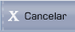
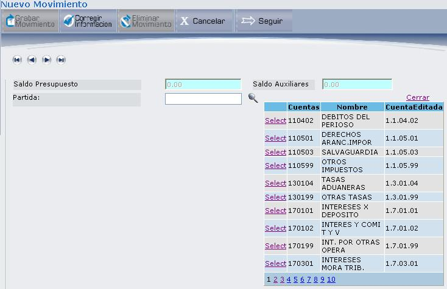
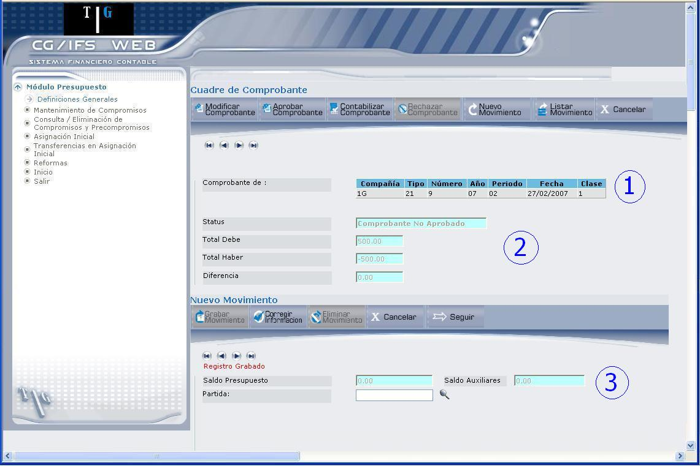

Mantenimiento de Compromisos
Esta opción permite realizar el mantenimiento de Precompromisos y Compromisos (Las definiciones puede consultar en el capítulo 7 Glosario). Al ingresar a esta opción se despliega la pantalla que muestra 4.14.
Figura 4.14. Mantenimiento de Compromisos.
Fecha:
Despliega la fecha actual del sistema, que corresponde a la fecha de Compromiso.
Tipo de Comprobante:
Seleccione el casillero de selección, si desea registrar un Precompromiso o Compromiso.
A continuación se describirá por separado Precompromiso y Compromiso, ya que ambos necesitan diferente información, antes de ingresar al registro del comprobante.
PRECOMPROMISO
Al haber seleccionado precompromiso, se ingresa la siguiente información:
Modo de Trabajo:
Seleccione el modo de trabajo, esto se refiere al tipo de comprobante que desea registrar, puede ser: Ingreso, Consulta o Ajuste.
INGRESO: Define el ingreso del precompromiso y asigna un número secuencial, como se puede observar a continuación:
Una vez que se asigna el número, presione el botón SEGUIR que se encuentra en la parte superior y que despliega la pantalla que muestra 4.15.
CONSULTA: Permite consultar los comprobantes que componen un Precompromiso. Al seleccionar esta opción debe presionar el botón SEGUIR que despliega una pantalla en donde debe ingresar la compañía en la que desea consultar los comprobantes, el número de comprobante y el botón CONSULTAR. Si no conoce el número de comprobante, presione el botón PRIMER COMPROBANTE, que automáticamente le ubica en el primer comprobante.
AJUSTE: Permite ajustar un Precompromiso existente. Debe digitar el número de precompromiso.
Al realizar un Ingreso, una Consulta o un Ajuste, debe dar clic en el botón SEGUIR o la tecla ENTER, que se explica más adelante en BOTONES.
COMPROMISO
Al seleccionar la opción de Compromiso, debe registrar la siguiente información, que requiere la pantalla de 4.15.
Tipo:
Escoja el tipo de compromiso, con el que desea trabajar, estos pueden ser los siguientes:
- Compromiso: Permite ingresar un compromiso, revisarlo, ajustarlo y posteriormente contabilizarlo.
- Compromiso Ejecutado sin Cheque: Permite ingresar compromisos de trámites que ya han generado cheque por lo tanto al contabilizar el compromiso se generará automáticamente el Ejecutado presupuestario, además permite revisarlos, ajustarlos, aprobarlos y posteriormente contabilizarlos.
- Compromiso Obligado Ejecutado: Permite ingresar Compromisos de trámites que por alguna razón no seguirán el proceso normal de Ejecución Presupuestaria y por lo tanto al contabilizar el compromiso se generará automáticamente el Obligado y ejecutado presupuestario, además permite revisarlos, ajustarlos, aprobarlos y posteriormente contabilizarlos.

Figura 4.15. Seleccionar Compromiso.
Modo de Trabajo:
Seleccione el tipo de comprobante que desea registrar, este puede ser: Ingreso, Consulta o Ajuste.
INGRESO: al escoger esta opción, se despliegan los siguientes campos:
Número de Compromiso: es un número secuencial que se asigna automáticamente.
Basado en un Precompromiso: Permite definir si el compromiso que está registrando se basa en un precompromiso. Al dar clic en la opción ´Si´, tiene que digitar el número de Precompromiso.
CONSULTA: Permite consultar los comprobantes que componen un compromiso.
AJUSTE: Permite ajustar un compromiso existente. Al escoger esta opción, debe digitar el número de compromiso.
Al realizar un Ingreso, una Consulta o un Ajuste, debe dar clic en el botón SEGUIR o la tecla ENTER.
INGRESO DE COMPROMISO O PRECOMPROMISO
Para el ingreso de Comprobantes de Compromiso o Precompromiso, se presenta la pantalla que muestra 4.16.
Figura 4.16. Entrada Interactiva de Compromisos.
La información a presentarse es la siguiente:
Compañía:
Digite el código de la compañía y presione la tecla ENTER. Si no conoce el código, de clic en el icono, el mismo que despliega la lista de compañías que se muestra en 4.17:
Figura 4.17. Ingreso Precompromiso – Seleccionar Compañía.
Seleccione la compañía dando clic en el vínculo Select, inmediatamente se despliega la información que muestra 4.18.
Figura 4.18. Ingreso Compromiso – Seleccionar Compañía.
Compañía:
Despliega el código de la compañía seleccionada, con quien se realizará el Compromiso.
Fecha:
Despliega la fecha del sistema, que seria la fecha que se realiza el compromiso.
Tipo:
Despliega el tipo de comprobante asignado para Compromiso que tiene que estar definido para entrada interactiva y encontrarse con status activo.
Número:
Asigna automáticamente el número de comprobante, al presionar el botón GRABAR COMPROBANTE, para -PERIODO-TIPO especificados.
Clase:
Utilice este campo si la compañía anotada usa Moneda Extranjera a nivel de plan, el valor por omisión es 1 (En este caso no se admiten comprobantes de Clase 0)
Los posibles valores para clases son:
- Si desea introducir todos los importes en Moneda Local. Los importes en Moneda Extranjera y los ajustes por redondeo, en el caso de existir, se hacen automáticamente.
- Si desean introducirse todos los importes en Moneda Extranjera. Los importes en Moneda Local y los ajustes por redondeo, en el caso de existir, se hacen automáticamente. La clase de comprobante 2, no admite movimientos de IVA.
- Si desean introducirse todos los importes en ambas monedas. El sistema recalcula de cambio en cada movimiento. En este caso el usuario es el responsable de cuadrar el comprobante en las dos monedas.
Comentarios:
Digite algún comentario sobre el comprobante.
BOTONES


BOTÓN GRABAR COMPROBANTE
Al presionar este botón se despliega la pantalla que muestra 4.19:
Figura 4.19. Ingreso Compromiso – Ingreso de Comprobante.
Esta pantalla se ha dividido en dos secciones que corresponden a:
SECCIÓN 1:
Presenta el encabezado del comprobante, en donde se tiene la siguiente información: código de compañía, tipo de comprobante, número de comprobante, año, periodo, fecha en que se registra el comprobante y clase (permite determinar la moneda a usarse). También en la parte superior se presentan unos botones (), los mismos que permiten la navegación entre los comprobantes registrados.
SECCIÓN 2:
Despliega la siguiente información:
Status:
Despliega el estado en que se encuentra un comprobante. Los posibles estados son:
- No aprobado: Puede ser modificado o rechazado. Si esta cuadrado puede ser aprobado.
- Aprobado: No puede ser modificado pero puede ser rechazado para modificarlo. Este comprobante será contabilizado al activarse el proceso de contabilización.
- Contabilizado: Sus asientos ya están reflejados en los saldos de las Cuentas de Mayor y Auxiliar correspondientes. No puede ser modificado en ninguno de sus campos contables (aunque si en algunos no contables), ni eliminado bajo ninguna circunstancia.
- Rechazado: Este comprobante queda “retirado” temporalmente del proceso contable y sus asientos no se reflejarán en los saldos de las cuentas. Puede ser modificado y también aprobado (en cuyo caso se reintegra al ciclo contable)
Total Debe:, Total Haber:
Despliega los valores en función de los movimientos que haya ingresado.
Diferencia:
Despliega la diferencia que existe entre el Debe y el Haber. Para que cuadre la diferencia debe ser cero.
BOTONES
Figura 4.20. Ingreso Compromiso – Actualización de encabezado del Comprobante.

BOTÓN NUEVO MOVIMIENTO
Al describir el ingreso de un nuevo movimiento, solo nos referiremos a la sección 3, de 4.21.
Para registrar un movimiento tome en cuenta la siguiente información:
Saldo Presupuesto:
Despliega el saldo presupuestado para la compañía. Este valor corresponde a la partida que seleccione.
Saldo Auxiliares:
Despliega el saldo de la cuenta auxiliar que seleccione.
Figura 4.21. Ingreso Compromiso – Registro de Movimiento.
Partida:
Para escoger una partida, digite el código de la partida, o de clic en el ícono, el mismo que despliega la lista de partidas como se muestra en 4.22.

Figura 4.22. Ingreso Compromiso – Registro de Movimiento – Seleccionar Partida.
Escoja la partida dando clic en el vínculo Select.
Una vez ingresada la partida, se desplegará la pantalla representada en 4.23.

Figura 4.23. Ingreso Compromiso – Registro de Movimiento.
Cuenta de Auxiliar:
Despliega la cuenta de auxiliar.
Descripción:
Digite la descripción del movimiento.
Importe:
Digite el importe del movimiento y presione el botón SEGUIR o la tecla ENTER. A continuación se presenta la pantalla mostrada en 4.24.
Figura 4.24. Ingreso Compromiso – Información Adicional.
Tipo Movimiento:
Indica si el movimiento se registra en las cuentas del debe o el haber.
Número Documento:
Despliega las iniciales del Compromiso (CO) y el número de documento que se asignó al inicio de esta opción.
Fecha Documento:
Despliega la fecha en la que se registro el comprobante.
Reservado Usuario: (opcional)
Se puede utilizar este campo para una clasificación adicional. Esta limitado a la función que desee proporcionarle el usuario, para una posterior identificación.
Por ultimo presione el botón SEGUIR o la tecla ENTER, que permite registrar el movimiento y ubicar los respectivos valores en las cuentas del debe y el haber (sección 2) de 4.25.

Figura 4.25. Ingreso Compromiso – Movimiento Registrado – Valores (Debe/Haber).
El usuario puede ingresar la cantidad de movimientos que requiera. Si desea listar los movimientos realizados, presione el botón LISTAR MOVIMIENTO, para desplegar los movimientos ingresados, con los asientos de cuadre generados automáticamente, como se presenta en 4.26:

Figura 4.26. Ingreso Compromiso – Movimiento Registrado – Listar Movimientos.
Como puede observarse en la sección 3 se despliegan los movimientos ingresados, si desea actualizar un movimiento, de clic en el vínculo Select.
Created with the Personal Edition of HelpNDoc: Free PDF documentation generator